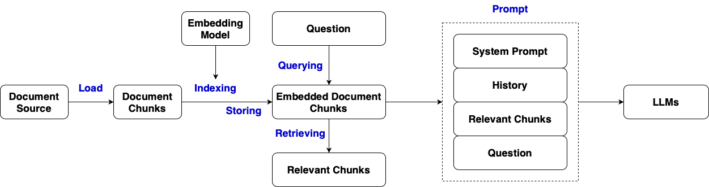
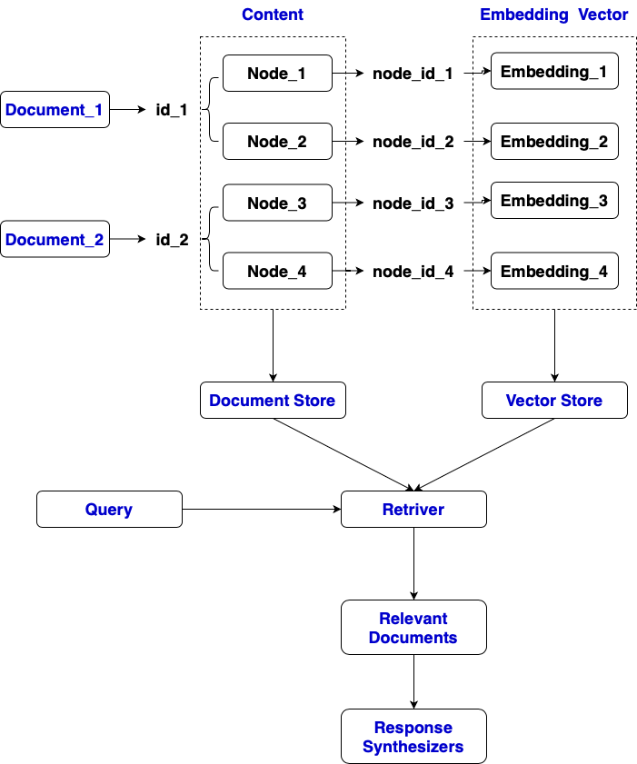

from llama_index.core import VectorStoreIndex, SimpleDirectoryReader, Settings, StorageContext
from llama_index.embeddings.huggingface import HuggingFaceEmbedding
from llama_index.llms.ollama import Ollama
from llama_index.core import PromptTemplate
# load from local documents
# .csv, .docx, .pdf, .md, .ppt, .ipynb
documents = SimpleDirectoryReader("data_dla/").load_data() # llama_index.core.schema.Document
# load from web urls
from llama_index.readers.web import SimpleWebPageReader
urls = [
"https://en.wikipedia.org/wiki/Artificial_intelligence",
"https://www.nytimes.com/2023/08/01/technology/ai.html"
]
documents = SimpleWebPageReader().load_data(urls)
# generate from a list of string
from llama_index.core import Document
text_list = [
"Artificial intelligence (AI) is intelligence demonstrated by machines, in contrast to the natural intelligence displayed by humans and animals.",
"Machine learning (ML) is a subset of AI focused on the development of algorithms that allow computers to learn from and make decisions based on data.",
"Natural language processing (NLP) is a field of AI that gives machines the ability to read, understand, and derive meaning from human language."
]
documents = [Document(text = text) for text in text_list]
# setup chunk size and chunk overlap size
Settings.chunk_size = 512
Settings.chunk_overlap = 10
# setup embedding model
embed_model = HuggingFaceEmbedding(model_name="BAAI/bge-base-en-v1.5")
# use SimpleDocumentStore to store documents
# use SimpleVectorStore to store embedding indices
index = VectorStoreIndex.from_documents(documents, embed_model=embed_model)
# document ids and their node ids
index.ref_doc_info
# access a node
index.storage_context.docstore.docs['70fe7c4b-6b7c-4979-878e-093fdc76ba63'].text
# access an index
index.vector_store.dict()['data']['embedding_dict']['70fe7c4b-6b7c-4979-878e-093fdc76ba63']
import faiss
from llama_index.vector_stores.faiss import FaissVectorStore
# setup chunk size and chunk overlap size
Settings.chunk_size = 128
Settings.chunk_overlap = 4
# use FAISS vector store
# 768, size of embedding vector, depends on embedding model
faiss_index = faiss.IndexFlatL2(768)
vector_store = FaissVectorStore(faiss_index=faiss_index)
storage_context = StorageContext.from_defaults(vector_store=vector_store)
index = VectorStoreIndex.from_documents(
documents, storage_context=storage_context, embed_model=embed_model
)
# save and load document store and vector store
from llama_index.core import load_index_from_storage
# save document store, vector store, and any other components associated with the index
index.storage_context.persist()
# load vector store from local
vector_store = FaissVectorStore.from_persist_dir("./storage")
# load document store from local
storage_context = StorageContext.from_defaults(
vector_store=vector_store, persist_dir="./storage"
)
# create index
index = load_index_from_storage(storage_context=storage_context)
from llama_index.core.retrievers import VectorIndexRetriever
retriever = VectorIndexRetriever(index=index, similarity_top_k = 10)
retrieved_docs = retriever.retrieve("What did the author do growing up?")
# or
retriever = index.as_retriever()
response = retriever.retrieve("What did the author do growing up?")
# or
Settings.llm = Ollama(model="phi3", request_timeout=360.0)
query_engine = index.as_query_engine()
response = query_engine.retrieve("What did the author do growing up?")
# not use LLMs
from llama_index.core.response_synthesizers import Refine
summarizer = Refine()
retriever = index.as_retriever()
response = retriever.retrieve("What did the author do growing up?")
summarizer.get_response("What did the author do growing up?", [record.text for record in response])
# use LLMs
from llama_index.core.response_synthesizers import Refine
llm = Ollama(model="phi3", request_timeout=360.0)
summarizer = Refine(llm=llm, verbose=True)
retriever = index.as_retriever()
response = retriever.retrieve("What did the author do growing up?")
summarizer.get_response("What did the author do growing up?", [record.text for record in response])
# manual query process
prompt_template = PromptTemplate(template="""
System Prompt:
{system_prompt}
Relevant Documents:
{context_str}
Query:
{query_str}
""")
system_prompt = """
Please answer the following query based on the relevant documents provided below.
Only use the information from these documents, and do not speculate or use external knowledge.
If no relevant documents are found, respond with 'No relevant documents found.' and model generated response
"""
query = "What did the author do growing up?"
retriever = index.as_retriever()
document_retrieve = retriever.retrieve("What did the author do growing up?")
relevant_documents = "\n".join([doc.text for doc in document_retrieve])
final_prompt = prompt_template.format(
system_prompt=system_prompt,
context_str=relevant_documents,
query_str=query
)
llm = Ollama(model="phi3", request_timeout=360.0)
response = llm.complete(prompt=final_prompt)
# query
# automatically setup retriever, response synthesizer
query_engine = index.as_query_engine()
response = query_engine.query("What did the author do growing up?")
# setup response synthesizer
from llama_index.core.response_synthesizers import Refine
summarizer = Refine(llm=llm, verbose=True)
query_engine = index.as_query_engine(response_synthesizer=summarizer)
response = query_engine.query("What did the author do growing up?")
# chat
# Conversational Context, keeps track of the conversation's context
# Combines Retrieval and Synthesis, uses the retriever to fetch relevant documents and the response synthesizer to generate human-like responses
chat_engine = index.as_chat_engine()
user_query_1 = "My name is Lin. What is your name?"
print("User:", user_query_1)
response_1 = chat_engine.chat(user_query_1)
print("Assistant:", response_1)
user_query_2 = "Nice to meet you. Do you know my name?"
print("User:", user_query_2)
response_2 = chat_engine.chat(user_query_2)
print("Assistant:", response_2)